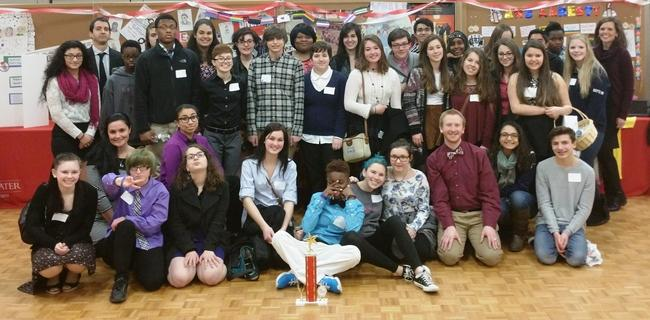
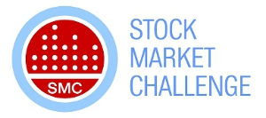

Change
Through change, the CCSR opes to create activities and opportunities for students to learn to be global citizens.
The CCRS in conjunction with the Headmaster is planning several events to deal with bullying: staff training, student awareness and parent workshops with support from MARC. In addition CCSR provided financial support for MHS students to attend the following state-wide competition: On Thursday, March 19th, Medford High Students from the GSA (Gay Straight Alliance) and Amnesty International attended the Anti-Bullying Youth Summit Conference, hosted by MARC. The students submitted a Public Service Announcement on Anti-Bullying and won the 2nd place award Click here for an article written by Molly Stroud and Maria Galebach about the the anti-bullying conference at Bridgewater State
Students will develop social awareness through understanding of the concepts of empathy and social responsibility. Their understanding and participation in sharing these concepts will be reflected in a project involving the creation of an awareness campaign regarding a social issue to be shared with their peers; students may choose to use digital media platforms, PSAs, and or print as the medium through which to communicate their message.
On Thursday, May 14th, Medford High School’s Gay-Straight Alliance (GSA) hosted a gender and sexuality identity workshop featuring three members from PFLAG (Parents & Friends of Lesbians and Gays). These three trans-identifying individuals from PFLAG held an open panel tackling issues and stereotypes regarding transgender topics and how Medford High can become a better environment for individuals of all genders. It began with educational lessons on terminology used within the spectrum of sexuality, gender identity, and expression. Afterward, a discussion-based forum opened where the PFLAG representatives demonstrated their charisma and shared their personal stories, graciously entertaining everyone’s questions and comments. Click here for an article written by Simona Miller and Devin Bombino.
Project: Students will learn about immigrants, and how they overcame cultural and economic challenges while living in the United States. The students will create a project that provides an analysis of the immigrant experience and explains how individuals were able to succeed in American society. Topics such as the following should be considered:
- overcoming cultural issues and language barriers
- learning American cultures and values
- acquiring and applying important skills in science, the arts, finance, etc.
- demonstrating a strong work ethic
- contributing to American society
Students will learn the basics of investing in the stock market and create a portfolio. They will compete for achievement awards for best portfolio performance. The club participants will access websites, cable/TV programs, local business people and guest speakers to create their portfolios.
Students will research how we learn and the role the brain plays at various age levels. Based on their research, the students will develop strategies and recommendations for acquiring important social and emotional skills. The findings will be shared by producing a media/technology presentation.
Students will write poems and compete for an award. A group of judges from MedfordHigh School will assess the quality of the poems using a rubric developed by the advisor in conjunction with the coordinator
CCRS is providing financial support to help MHS students celebrate our diversity
Students will learn the fundamentals of investing and entrepreneurship through research, case studies, creating a business plan and developing an investment portfolio. In the spring, the students will compete for local and national awards.
Students will produce a monthly video program for our educational cable channel that:
- highlights student and faculty achievements
- provide insights to the struggles and successes of individuals
- emphasizes multiculturalism
- encourages good citizenship
- informs the school community of noteworthy events
Students will research philanthropic organizations and select one to support. The club will develop strategies to raise money for this organization.
Students will produce a video program of a person that provides insight to the struggles and successes of individuals in their education, career or daily life. Students will compete for achievement awards for their projects which will be cablecast to the community.
Teachers will study the fundamentals of how we learn and the role that experience plays in the process. The participants will review current research on this topic and develop recommendations for improving instruction in the classroom for each grade level.